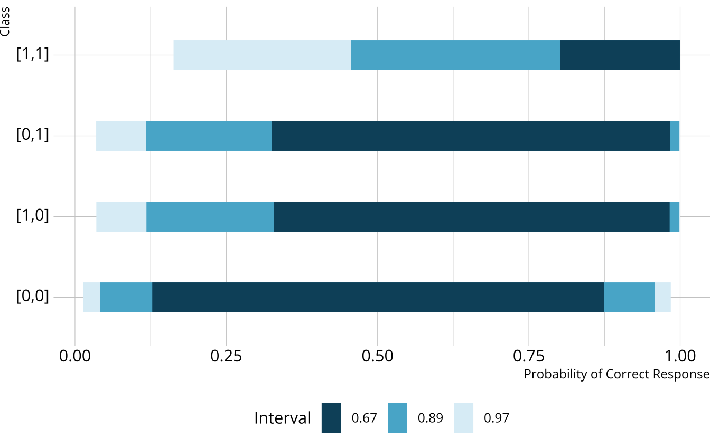

# A tibble: 2,922 × 29
resp_id E1 E2 E3 E4 E5 E6 E7 E8 E9 E10 E11
<int> <int> <int> <int> <int> <int> <int> <int> <int> <int> <int> <int>
1 1 1 1 1 0 1 1 1 1 1 1 1
2 2 1 1 1 1 1 1 1 1 1 1 1
3 3 1 1 1 1 1 1 0 1 1 1 1
4 4 1 1 1 1 1 1 1 1 1 1 1
5 5 1 1 1 1 1 1 1 1 1 1 1
6 6 1 1 1 1 1 1 1 1 1 1 1
7 7 1 1 1 1 1 1 1 1 1 1 1
8 8 0 1 1 1 1 1 0 1 1 1 0
9 9 1 1 1 1 1 1 1 1 1 1 1
10 10 1 1 1 1 0 0 1 1 1 1 1
# ℹ 2,912 more rows
# ℹ 17 more variables: E12 <int>, E13 <int>, E14 <int>, E15 <int>, E16 <int>,
# E17 <int>, E18 <int>, E19 <int>, E20 <int>, E21 <int>, E22 <int>,
# E23 <int>, E24 <int>, E25 <int>, E26 <int>, E27 <int>, E28 <int>Estimating diagnostic classification models
With Stan and measr
W. Jake Thompson, Ph.D.
Example data
Data for examples
- Examination for the Certificate of Proficiency in English (ECPE; Templin & Hoffman, 2013)
- 28 items measuring 3 total attributes
- 2,922 respondents
- 3 attributes
- Morphosyntactic rules
- Cohesive rules
- Lexical rules
ECPE data
ECPE Q-matrix
Data for exercises
- Multiplication data from MacReady & Dayton (1977)
Exercise 1
- Download the exercise files
Open
estimation.RmdRun the
setupchunk-
Explore
mdm_dataandmdm_qmatrix- How many items are in the data?
- How many respondents are in the data?
- How many attributes are measured?
03:00
Estimation options
Existing software
Software Programs
- Mplus, flexMIRT, mdltm
- Limitations
- Tedious to implement, expensive, limited licenses, etc.
R Packages
- CDM, GDINA, mirt, blatant
- Limitations
- Limited to constrained DCMs, under-documented
- Different packages have different functionality, and don’t talk to each other
DCMs with Stan
- Stan is free and open-source
- Functionality is well-documented
- Ecosystem of supporting packages
- Existing documentation for implementing DCMs

Stan for DCMs: Structure
Like most Stan programs, there are four main blocks:
dataparameterstransformed parametersmodel
Stan for DCMs: data
Stan for DCMs: parameters
Item parameters in Stan
# A tibble: 2 × 4
item_id morphosyntactic cohesive lexical
<chr> <int> <int> <int>
1 E1 1 1 0
2 E2 0 1 0\(\lambda_{1,0} + \lambda_{1,1(1)} + \lambda_{1,1(2)} + \lambda_{1,2(1,2)}\)
- Item 1 measures attributes 1 and 2
- Intercept (
l1_0) - Two main effects (
l1_11andl1_12) - One two-way interaction (
l1_212)
- Intercept (
\(\lambda_{2,0} + \lambda_{2,1(2)}\)
- Item 2 measures only attribute 2
- Intercept (
l2_0) - One main effect (
l2_12)
- Intercept (
Repeat for all remaining items.
Stan for DCMs: transformed parameters
transformed parameters {
matrix[I,C] PImat;
PImat[1,1] = inv_logit(l1_0);
PImat[1,2] = inv_logit(l1_0 + l1_1);
PImat[1,3] = inv_logit(l1_0 + l1_2);
PImat[1,4] = inv_logit(l1_0);
PImat[1,5] = inv_logit(l1_0 + l1_11 + l1_12 + l1_212);
PImat[1,6] = inv_logit(l1_0 + l1_1);
PImat[1,7] = inv_logit(l1_0 + l1_2);
PImat[1,8] = inv_logit(l1_0 + l1_11 + l1_12 + l1_212);
...
}DCM classes
Mapping classes to PImat
transformed parameters {
matrix[I,C] PImat;
PImat[1,1] = inv_logit(l1_0);
PImat[1,2] = inv_logit(l1_0 + l1_1);
PImat[1,3] = inv_logit(l1_0 + l1_2);
PImat[1,4] = inv_logit(l1_0);
PImat[1,5] = inv_logit(l1_0 + l1_11 + l1_12 + l1_212);
PImat[1,6] = inv_logit(l1_0 + l1_1);
PImat[1,7] = inv_logit(l1_0 + l1_2);
PImat[1,8] = inv_logit(l1_0 + l1_11 + l1_12 + l1_212);
...
}Stan for DCMs: model
\(P(X_r=x_r) = \sum_{c=1}^C\nu_c \prod_{i=1}^I\pi_{ic}^{x_{ir}}(1-\pi_{ic})^{1 - x_{ir}}\)
Exercise 2
Complete the parameters and transformed parameters blocks for the MDM data.
05:00
parameters {
simplex[C] Vc;
// item parameters
real l1_0;
real<lower=0> l1_11;
real l2_0;
real<lower=0> l2_11;
real l3_0;
real<lower=0> l3_11;
real l4_0;
real<lower=0> l4_11;
}
transformed parameters {
matrix[I,C] PImat;
PImat[1,1] = inv_logit(l1_0);
PImat[1,2] = inv_logit(l1_0 + l1_11);
PImat[2,1] = inv_logit(l2_0);
PImat[2,2] = inv_logit(l2_0 + l2_11);
PImat[3,1] = inv_logit(l3_0);
PImat[3,2] = inv_logit(l3_0 + l3_11);
PImat[4,1] = inv_logit(l4_0);
PImat[4,2] = inv_logit(l4_0 + l4_11);
}Limitations of Stan for DCMs
- Very tedious—prone to typos
- Complexity increases with the number of attributes and item structure
-
parametersandtransformed parametersblocks have to be customized to each particular Q-matrix
Benefits of Stan for DCMs

What is measr?
measr_dcm()
Estimate a DCM with Stan
ecpe <- measr_dcm(
data = ecpe_data, qmatrix = ecpe_qmatrix,
resp_id = "resp_id", item_id = "item_id",
type = "lcdm",
method = "mcmc", backend = "cmdstanr",
iter_warmup = 1000, iter_sampling = 500,
chains = 4, parallel_chains = 4,
file = "fits/ecpe-lcdm"
)- 1
- Specify your data, Q-matrix, and ID columns
- 2
- Choose the DCM to estimate (e.g., LCDM, DINA, etc.)
- 3
- Choose the estimation engine
- 4
- Pass additional arguments to rstan or cmdstanr
- 5
- Save the model to save time in the future
measr_dcm() options
type: Declare the type of DCM to estimate. Currently support LCDM, DINA, DINO, and C-RUMmethod: How to estimate the model. To sample, use “mcmc”. To use Stan’s optimizer, use “optim”backend: Which engine to use, either “rstan” or “cmdstanr”-
...: Additional arguments that are passed to, depending on themethodandbackend:
Exercise 3
Estimate and LCDM on the MDM data. Your model should have:
- 2 chains
- 1000 warmup and 500 sampling iterations
- Use whichever backend you prefer
05:00
Extracting item parameters
measr_extract() can be used to pull out components of an estimated model.
# A tibble: 74 × 5
item_id class attributes coef estimate
<fct> <chr> <chr> <glue> <rvar[1d]>
1 E1 intercept <NA> l1_0 0.82 ± 0.074
2 E1 maineffect morphosyntactic l1_11 0.59 ± 0.356
3 E1 maineffect cohesive l1_12 0.64 ± 0.217
4 E1 interaction morphosyntactic__cohesive l1_212 0.54 ± 0.481
5 E2 intercept <NA> l2_0 1.04 ± 0.077
6 E2 maineffect cohesive l2_12 1.24 ± 0.147
7 E3 intercept <NA> l3_0 -0.35 ± 0.073
8 E3 maineffect morphosyntactic l3_11 0.74 ± 0.379
9 E3 maineffect lexical l3_13 0.36 ± 0.115
10 E3 interaction morphosyntactic__lexical l3_213 0.53 ± 0.395
# ℹ 64 more rowsExtracting structural parameters
Extracting respondent probabilities
# A tibble: 2,922 × 4
resp_id morphosyntactic cohesive lexical
<fct> <dbl> <dbl> <dbl>
1 1 0.997 0.955 1.00
2 2 0.995 0.899 1.00
3 3 0.983 0.988 1.00
4 4 0.998 0.990 1.00
5 5 0.988 0.980 0.955
6 6 0.992 0.989 1.00
7 7 0.992 0.989 1.00
8 8 0.00436 0.444 0.961
9 9 0.945 0.984 0.999
10 10 0.545 0.123 0.115
# ℹ 2,912 more rowsExercise 4
What proportion of respondents have mastered multiplication in the MDM data?
What is the probability that respondent zfn2i has mastered multiplication?
02:00
Priors
Default priors
Weakly informative priors

Creating custom priors
# A tibble: 1 × 3
class coef prior_def
<chr> <chr> <chr>
1 maineffect <NA> normal(0, 10)
Specifying custom priors
Extract priors
# A tibble: 4 × 3
class coef prior_def
<chr> <chr> <chr>
1 intercept <NA> normal(0, 2)
2 maineffect <NA> lognormal(0, 1)
3 interaction <NA> normal(0, 2)
4 structural Vc dirichlet(rep_vector(1, C))
Exercise 5
Estimate a new LCDM model for the MDM data with the following priors:
- Intercepts:
normal(-1, 2)- Except item 3, which should use a
normal(0, 1)prior
- Except item 3, which should use a
- Main effects:
lognormal(0, 1)
Extract the prior to see that the specifications were applied
05:00
new_mdm <- measr_dcm(
data = mdm_data, qmatrix = mdm_qmatrix,
resp_id = "respondent", item_id = "item",
type = "lcdm",
prior = c(prior(normal(-1, 2), class = "intercept"),
prior(normal(0, 1), class = "intercept", coef = "l3_0")),
method = "mcmc", backend = "cmdstanr",
iter_warmup = 1000, iter_sampling = 500, chains = 2,
file = "fits/mdm-new-prior"
)
Estimating diagnostic classification models
With Stan and measr